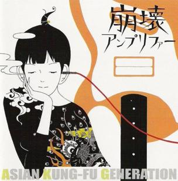

A life, with interjections from Yusuke Nakamura
2024 October 11I just finished watching The Night is Short, So Walk On Girl. This post isn't really about that, but consider my review "it's good, amazing even, watch it."
As you may or may not know, Asian King-Fu Generation did the credits theme for it. They also did credits music for The Tatami Galaxy, from the same director adapting the same author's work. So there's kind of a full aesthetic throughline there, right? And it turns out Yusuke Nakamura is the artist who illustrated the first AKFG album cover as well as designing the characters for both pieces. I think he also illustrated the original novels.
So. Ok. Picture to yourself the year 2007.
Sorry. That's a gag. But really, 2007. I was in grad school. I'd just graduated from my MA program and I'd moved far far away for my MFA. That was probably one of the hardest couple of months in my life. I was completely alone. I had a terrible apartment with too few storage options, so my living room genuinely looked like a forever alone otaku home.
I mean it. I had an inkjet printer on a table meant for a drink and maybe a lamp. I had a light blue futon couch, that I'd owned for at least 3 years at that point. All my books were in a black plastic footlocker my parents had bought me when I went away to college 6 years prior. I once heard a scratching in it, loud, even through my headphones, and discovered a cockroach scraping at a sheet of paper on a pile of the books. This was at 2 am.
I used to come back from teaching at 8 am, after 3 or 4 hours of sleep, and nap on the couch before getting up and going to my own afternoon classes.
A decade later I told that to a friend and my partner said, "is that why you always looked so rumpled?" Yes, beloved, that was why.
I slept on an air mattress in a strangely roomy upstairs room, with a walk in closet -- the only window upstairs was in the closet. I never had the thought that I should buy a fabric shower curtain, so every time I showered the plastic curtain wrapped itself around me as the humidity changed. I sat in my backyard to drink tea and grade: my backyard was a fenced-in area just large enough for me to lie down in, if it weren't for the air unit. I lived that way for a school year, around 8 months.
And due to a misunderstanding, I didn't have internet the entire first year. I was told the campus apartments provided it. I learned near the end of the year that I had been expected to get it from a third party ISP if I wanted it.
Did I go through entire year without internet? No. No I did not. I bought a wireless dongle adapter and got on the campus wifi. Except it wasn't. It was the internal wifi for the office. I just happened to be close enough, sometimes to be surfing it, and it was open. No password required.
So I downloaded anime in chunks off IRC. I was watching Nanoha, Zetsubou-Sensei, and Welcome to the NHK. Two of these are not prone to cheering one up, though they were good.
This was when Gundam 00 was coming out too. I was watching that. I remember nothing about that show now except the way it looked. It was, I know now that I've seen some original Gundam, bad.
But that intro was good.
So the context for this is that one evening I was on campus late, and I decided to download some music for my off brand mp3 player. I raked through some kind soul's bot on IRC, and found the music folder. I checked out the bands on the web and one caught my eye: Asian Kung-Fu Generation.
Let me sort of dig up the buried lede for you now. I have never seen an episode of Naruto. So I had never heard of this band.
And in a move that still makes my friend laugh when I mention it, I downloaded Houkai Amplifier explicitly because I wanted to listen to some jrock that wasn't from anime.
Yes. I know.
Should you be reading and not know, the first track from that EP was an intro for Naruto, making them one of the most anime intro bands ever.
I listened to that album a lot. And the thing I'm writing about here, is that the album cover is what caught my attention, right?

And who drew that? Yusuke Nakamura. It was apparently fairly early in his career. And the entire time I was watching Walk On Girl I loved the way it looked. I loved the character design. And I found, once again, that it was Yusuke Nakamura. And I did that because I web searched that old AKFG album, since they did the movie's outro and I wanted to check that album out after so many years. And the similarity in the art struck me, until I said, "it can't be," and I looked it up.
And it can be. It is.
This isn't a revelatory story. A popular band and artist showed up in my life at two separate spots, intersecting my life like the Sun's ecliptic meets the Moon's. But it was eerie, this swimming up out of the depths of the past, this rising of things mostly forgotten about.
A contributing factor is probably that the movie ends up handling that feeling of lonely masculine hesitation and self-isolation well. And I certainly went through that, having been told I was a man and not knowing any better yet. I believed I needed a girlfriend and also that I would never "get" one. I did, briefly. She broke up with me over the phone during summer break. I had to go over in August and get my TV from her place. She'd stored it in a corner while I was away.
I met my partner soon after. I wasn't looking, for once, you see. I was talking to people at a party just to talk. But I asked her to come back to my place. But not like that. My roommate was there and we were bored. We'd also started watching all the Star Trek movies. So we invited her to bail on the party and watch Search for Spock with us. She said yes, and soon we'll have been married for 9 years.
This got away from me. It's not really about anime music any longer. But I guess the way the movie handled the feelings of Unnamed Male Protagonist #2 spoke to me, a me from long ago that's still around sometimes.
But Unnamed Female Protagonist #1 is still too good for him. Maybe that will change though. In time.